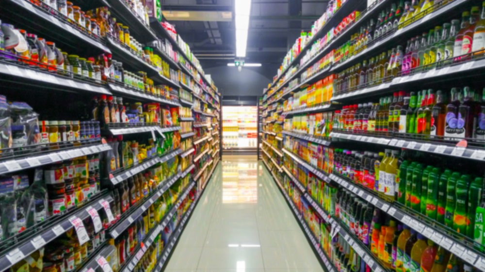
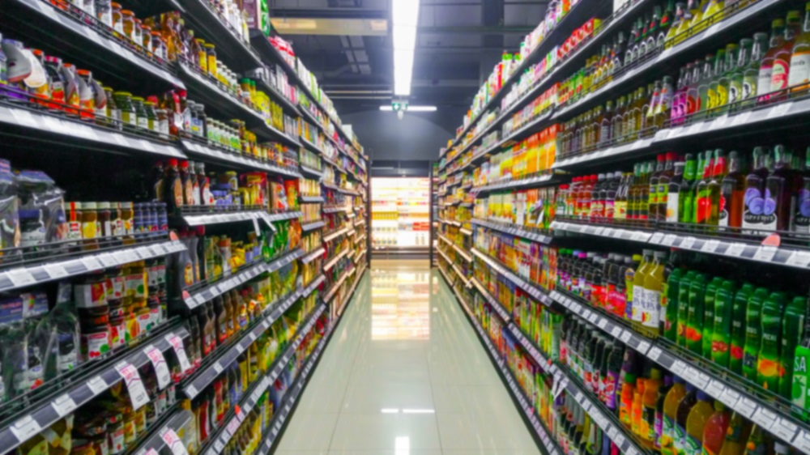
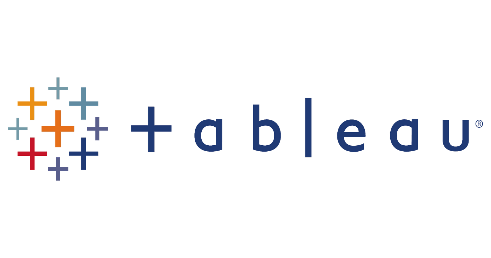
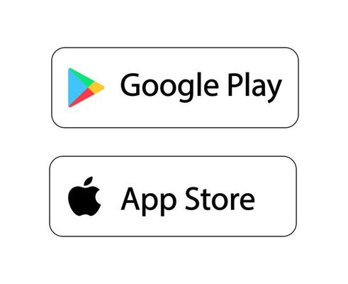

In this project, we gather insight from the Northwind dataset
to help make strategic decisions for several aspects of the business.

Projects utlizing Tableau are on my Tableau public.
This project, we looked at how Covid effected the exchange rate of the Euro and the Dollar using Python.
In this project, we want see what type of post and at what time get us he most comments.

This project, we look through apps from the Google and Apple app store and determine what makes profitable.
In this project, we want to find what contributes to heavy traffic on I-94.